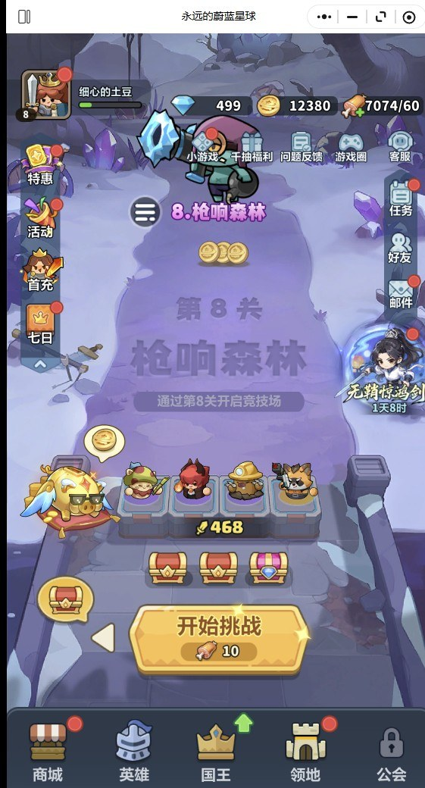
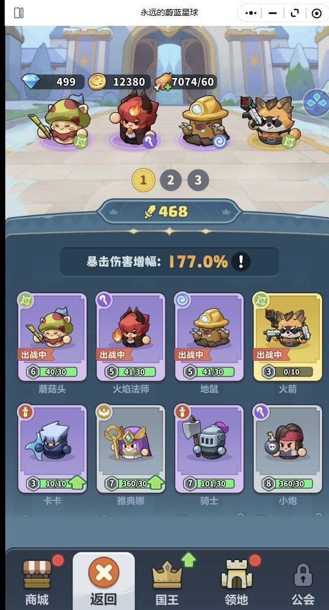
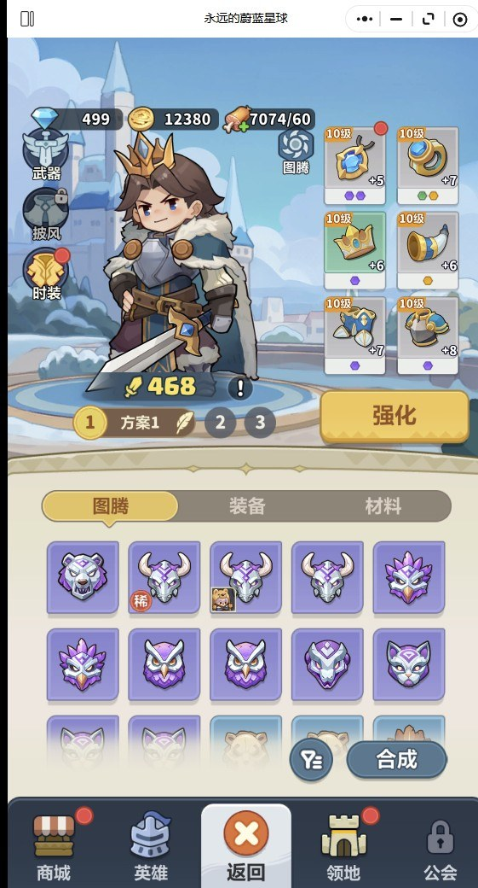

永远的蔚蓝星球
微信小游戏头部爆款 —— 竖屏塔防 + 英雄合成，用平滑的难度曲线和密集的付费点，把「放置」做成了一门月流水 2 亿的生意。
🔗 访问游戏AppID wxd704b6fcc8ba8e9e。诗悦过往以重度游戏闻名，《蔚蓝》是其跳出舒适区的第一款塔防小游戏，结果做成了头部爆款 —— 微信小游戏畅销榜最高第 2 名、首月双端流水超 2 亿、月活 640 万、周杰伦代言。这不是小作坊作品，是 2026 年小游戏赛道的标杆级产品。
微信小程序 + iOS 双渠道，桌面版体验完整
流水：首月双端超 2 亿（2025 年 6 月，iOS 净收入 1.08 亿 + 安卓约 1 亿）；截至 2025 年 8 月 iOS 单端累计约 1.97 亿；2026 年 3 月 iOS 月流水仍约 2600 万元。用户量：月活 640 万（QuestMobile，近一年新上线手游月活 Top10 第 3）；TapTap 下载 78 万、关注 59 万、评分 8.0；App Store 评分 4.8、30 万+ 评价。榜单：2026 年 7 月畅销榜第 4（曾达第 2），11 月 12 日畅销榜第 10。日活数据公开渠道未披露。
头部爆款 —— 畅销榜最高第 2、月活 640 万、周杰伦代言
开始挑战 → 自动战斗（10 波）→ 胜利/失败 → 强化英雄/装备/召唤 → 提升战力 → 推更远的关。局内自动战斗，局外养成（英雄升级、装备强化、抽卡）决定强度。挂机收菜 + 快速扫荡获取资源。
竖屏塔防 + 英雄合成，自动战斗 + 波次推进。局内不需要操作，胜负在局外养成（战力）就已决定。
证据锚点 1 条
- 【low】战斗失败后只显示「战斗失败」和输出统计，没有告诉玩家该去强化什么 — 实测：第 8 关战斗失败后，结算画面只有「战斗失败」「输出统计 MVP 182K」「通关奖励 EXP 153」「双倍奖励」「返回」。
邪恶哥布林入侵星球，国王招募英雄抵御入侵。题材本身不构成差异化，但包装（萌趣卡通 + 周杰伦代言）带来了破圈传播。
奇幻星球守卫战，哥布林入侵。题材本身不构成差异化，但包装（萌趣卡通 + 周杰伦代言）带来了破圈传播。
萌趣卡通 + Q 版英雄，战斗特效清晰。风格统一，完成度高。
玩到的：首充 ¥6（送武器幻化 + 全队攻击力+50 + 3 天奖励）、擂鼓/星愿抽卡（星愿币稀缺，需付费或推进获得）、图腾寻宝（20 次保底）、福利月卡（快速扫荡不限次数）、广告跳过卡（PC 端专属）、直充入口。未解锁：首充内容、月卡、礼包档位都没实际充过。付费点密集但难度曲线平滑，前期不逼氪。
IAA + IAP 混合变现。首充 6 元钩子 + 抽卡 + 月卡，付费点密集但难度曲线平滑，前期不逼氪。
证据锚点 1 条
- 【low】星愿币主要靠主线宝箱（逢 5/10 关）和礼包，零氪玩家卡关后星愿币断供 — 实测：星愿招募界面显示「星愿币 拥有数量：0」。
预览 实机录像与截图
系统与运营活动


